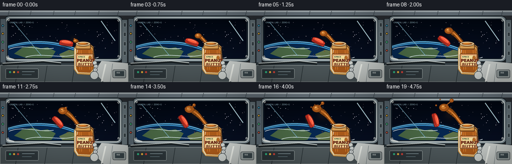
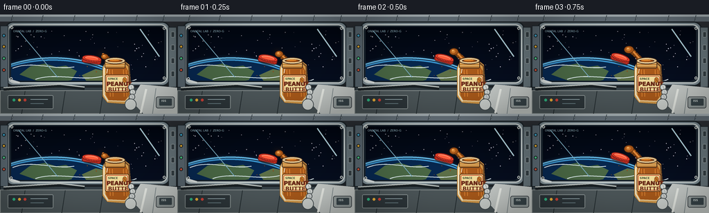
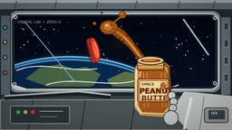

CODING AGENTS AS PIXEL WORLD MODELS
traex/GPT-5.6-Sol · mechanics_0001
点击播放 · 原生 RGB 像素
逐轮保存的候选
回放视频、检查图与代码变化。
每份候选均可单独播放。实际图片检查记录在下方工具轨迹中。
候选 01播放与检查图
点击播放 · 原生 RGB 像素


展开代码变化
--- 上一保存版本
+++ 本次保存版本
@@ -0,0 +1,248 @@
+from pathlib import Path
+import math, json
+import numpy as np
+from PIL import Image, ImageDraw, ImageFont, ImageFilter
+import artifact_io
+
+ROOT = Path(__file__).resolve().parent
+SPEC = json.loads((ROOT/'task_spec.json').read_text())
+W,H,N = SPEC['width'],SPEC['height'],SPEC['frames']
+S=4
+w,h=W*S,H*S
+rng=np.random.default_rng(41)
+
+try:
+ FONT_B=ImageFont.truetype('/usr/share/fonts/truetype/dejavu/DejaVuSans-Bold.ttf', 8*S)
+ FONT_S=ImageFont.truetype('/usr/share/fonts/truetype/dejavu/DejaVuSans.ttf', 4*S)
+ FONT_X=ImageFont.truetype('/usr/share/fonts/truetype/dejavu/DejaVuSans-Bold.ttf', 4*S)
+except:
+ FONT_B=FONT_S=FONT_X=ImageFont.load_default()
+
+def sc(v): return int(round(v*S))
+def pts(seq): return [(sc(x),sc(y)) for x,y in seq]
+def ellipse(d, box, fill, outline=None, width=1): d.ellipse(tuple(sc(x) for x in box),fill,outline,width=sc(width) if outline else 1)
+def rect(d, box, fill, outline=None, width=1, radius=0):
+ b=tuple(sc(x) for x in box)
+ if radius: d.rounded_rectangle(b, radius=sc(radius), fill=fill, outline=outline, width=sc(width))
+ else: d.rectangle(b,fill,outline,width=sc(width) if outline else 1)
+def line(d, seq, fill, width=1): d.line(pts(seq), fill=fill, width=sc(width), joint='curve')
+
+def bezier(p0,p1,p2,p3,n=30):
+ out=[]
+ for t in np.linspace(0,1,n):
+ u=1-t
+ out.append((u**3*p0[0]+3*u*u*t*p1[0]+3*u*t*t*p2[0]+t**3*p3[0],u**3*p0[1]+3*u*u*t*p1[1]+3*u*t*t*p2[1]+t**3*p3[1]))
+ return out
+
+def glow(im, center, radius, color, alpha=100):
+ ov=Image.new('RGBA', im.size,(0,0,0,0)); od=ImageDraw.Draw(ov)
+ x,y=center
+ od.ellipse((sc(x-radius),sc(y-radius),sc(x+radius),sc(y+radius)),fill=(*color,alpha))
+ ov=ov.filter(ImageFilter.GaussianBlur(sc(radius*.6)))
+ im.alpha_composite(ov)
+
+def draw_lid(im,x,y,ang):
+ # Render the drifting ribbed screw lid on a local transparent plate.
+ L=Image.new('RGBA',(sc(34),sc(24)),(0,0,0,0)); d=ImageDraw.Draw(L)
+ d.ellipse((sc(3),sc(6),sc(31),sc(18)),fill=(40,29,24,110))
+ d.rounded_rectangle((sc(3),sc(7),sc(31),sc(15)),radius=sc(3),fill=(210,48,31,255),outline=(108,24,20,255),width=sc(1))
+ d.ellipse((sc(3),sc(3),sc(31),sc(13)),fill=(236,67,43,255),outline=(117,28,23,255),width=sc(1))
+ d.ellipse((sc(6),sc(5),sc(28),sc(11)),fill=(253,93,60,255),outline=(174,39,30,255),width=sc(1))
+ for xx in np.linspace(5,29,11): d.line((sc(xx),sc(10),sc(xx),sc(15)),fill=(130,28,24,190),width=sc(.45))
+ d.arc((sc(7),sc(5),sc(27),sc(11)),190,335,fill=(255,159,122,255),width=sc(1))
+ L=L.rotate(ang,resample=Image.Resampling.BICUBIC,expand=True)
+ im.alpha_composite(L,(sc(x)-L.width//2,sc(y)-L.height//2))
+
+def draw_station_base(t):
+ # Warm-white ISS style cabin surrounding a large dark orbital window.
+ yy,xx=np.mgrid[0:h,0:w]
+ bg=np.zeros((h,w,4),dtype=np.uint8)
+ v=35+22*(1-yy/h)+8*np.sin(xx/w*math.pi)
+ bg[:,:,:3]=np.stack([v*.84,v*.91,v],axis=-1).clip(0,255)
+ bg[:,:,3]=255
+ im=Image.fromarray(bg,'RGBA'); d=ImageDraw.Draw(im)
+ # upper panels
+ rect(d,(0,0,256,10),(107,119,128,255)); rect(d,(0,0,256,3),(178,188,192,255))
+ for x in [18,62,108,151,198,237]:
+ line(d,[(x,1),(x-2,9)],(55,67,75,255),1)
+ ellipse(d,(x-1,4,x+1,6),(188,200,203,255),(47,56,61,255),.5)
+ # Window outer frame and gasket
+ rect(d,(7,10,246,104),(128,143,150,255),(30,39,44,255),2,12)
+ rect(d,(11,14,242,100),(28,39,49,255),(202,211,210,255),2,10)
+ rect(d,(16,18,237,96),(2,8,17,255),(10,15,22,255),1,8)
+ # orbital view gradient, masked to rounded opening
+ vw,vh=sc(221),sc(78)
+ sy,sx=np.mgrid[0:vh,0:vw]
+ space=np.zeros((vh,vw,4),dtype=np.uint8)
+ space[:,:,0]=(2+5*sy/vh).astype(np.uint8);space[:,:,1]=(7+8*sy/vh).astype(np.uint8);space[:,:,2]=(17+16*sy/vh).astype(np.uint8);space[:,:,3]=255
+ view=Image.fromarray(space,'RGBA')
+ vd=ImageDraw.Draw(view)
+ # stars fixed in world, tiny varied intensity
+ srng=np.random.default_rng(8)
+ for _ in range(70):
+ sx0=float(srng.uniform(4,217)); sy0=float(srng.uniform(2,65)); rr=float(srng.choice([.25,.35,.5,.7],p=[.25,.35,.3,.1])); b=int(srng.integers(130,255))
+ vd.ellipse((sc(sx0-rr),sc(sy0-rr),sc(sx0+rr),sc(sy0+rr)),fill=(b,b,int(min(255,b*1.08)),int(srng.integers(130,240))))
+ # Earth limb sweeps through lower-left of window
+ vd.ellipse((sc(-65),sc(47),sc(185),sc(192)),fill=(7,40,80,255),outline=(67,172,236,255),width=sc(2))
+ vd.arc((sc(-65),sc(44),sc(187),sc(192)),190,347,fill=(121,215,255,255),width=sc(2))
+ # blue atmosphere bloom
+ atm=Image.new('RGBA',view.size,(0,0,0,0)); ad=ImageDraw.Draw(atm)
+ ad.arc((sc(-67),sc(43),sc(189),sc(194)),190,347,fill=(73,168,255,130),width=sc(5));atm=atm.filter(ImageFilter.GaussianBlur(sc(3)));view.alpha_composite(atm)
+ vd=ImageDraw.Draw(view)
+ # continents and clouds
+ vd.polygon(pts([(12,69),(28,57),(49,53),(65,58),(79,56),(95,64),(87,77),(59,82),(37,78)]),fill=(74,104,69,210))
+ vd.polygon(pts([(102,70),(122,61),(147,66),(158,76),(139,84),(111,81)]),fill=(93,112,72,190))
+ for cloud in [bezier((2,60),(32,48),(58,63),(91,58),22),bezier((35,76),(67,65),(104,81),(137,70),22),bezier((90,85),(124,74),(157,85),(181,76),18)]:
+ vd.line(pts(cloud),fill=(225,239,242,160),width=sc(1.3))
+ # mask rounded window
+ mask=Image.new('L',(vw,vh),0);ImageDraw.Draw(mask).rounded_rectangle((0,0,vw-1,vh-1),radius=sc(7),fill=255)
+ im.paste(view,(sc(16),sc(18)),mask)
+ d=ImageDraw.Draw(im)
+ # reflected lines on glass
+ line(d,[(27,24),(83,91)],(119,169,190,25),1);line(d,[(202,21),(230,61)],(175,208,218,22),2)
+ # cross braces and frame hardware
+ line(d,[(15,95),(28,99)],(220,226,224,255),3)
+ for x,y in [(17,19),(237,20),(16,93),(237,92)]:
+ ellipse(d,(x-2,y-2,x+2,y+2),(72,82,87,255),(218,223,220,255),1);line(d,[(x-1,y),(x+1,y)],(27,33,35,255),.7)
+ # left and right utility walls
+ rect(d,(0,16,12,131),(91,105,114,255),(32,41,47,255),1)
+ for y0,c in [(28,(63,161,198,255)),(44,(222,167,50,255)),(61,(74,194,128,255)),(78,(202,82,60,255))]:
+ ellipse(d,(3,y0,8,y0+5),(26,33,37,255));ellipse(d,(4,y0+1,7,y0+4),c)
+ rect(d,(243,18,255,129),(104,118,124,255),(32,41,47,255),1)
+ for y0 in [25,44,63,82]: rect(d,(247,y0,252,y0+8),(53,64,69,255),(177,185,185,255),.5,1)
+ # foreground equipment deck
+ rect(d,(0,105,256,144),(55,66,72,255),(24,31,35,255),1)
+ rect(d,(0,110,256,144),(78,88,91,255),(145,153,151,255),1)
+ # panel seams
+ for x0 in [36,94,149,210]: line(d,[(x0,111),(x0-5,144)],(35,44,47,255),1)
+ rect(d,(11,117,77,137),(46,55,59,255),(144,154,154,255),1,2)
+ for x0,c in [(18,(50,190,135,255)),(26,(242,181,60,255)),(34,(216,68,58,255))]: ellipse(d,(x0,122,x0+4,126),c)
+ line(d,[(44,123),(69,123)],(152,172,177,255),1);line(d,[(44,129),(63,129)],(109,131,137,255),1)
+ # handrail
+ line(d,[(5,108),(86,103),(122,107)],(27,34,37,255),5);line(d,[(5,106),(86,101),(122,105)],(186,193,190,255),2)
+ # tiny warning decal
+ rect(d,(214,114,241,126),(234,191,49,255),(50,50,38,255),.7,1)
+ d.text((sc(217),sc(116)),"CAUTION",font=FONT_X,fill=(40,44,42,255))
+ return im
+
+def draw_peanut(im,t):
+ # mouth center; a heavy, glossy ribbon slowly stretches in microgravity.
+ d=ImageDraw.Draw(im)
+ mouth=(158.5,67.0)
+ e=1-math.exp(-2.4*t) # quick initial emergence, then slow creep
+ # diffuse warm reflection behind blob
+ glow(im,(147-17*e,58-15*e),7+5*e,(203,106,31),36)
+ d=ImageDraw.Draw(im)
+ # main curved ribbon centerline, increasingly long and necked
+ end=(151-34*e,61-34*e+1.3*math.sin(t*3))
+ curve=bezier(mouth,(153,62),(147-8*e,58-22*e),end,38)
+ widths=[]
+ for i in range(len(curve)):
+ q=i/(len(curve)-1)
+ widths.append((8.5-3*q)+(5.5*e*math.exp(-((q-.78)/.23)**2)))
+ # variable width rendered back to front
+ for i in range(len(curve)-1):
+ q=i/(len(curve)-1)
+ col=(124+int(25*q),63+int(17*q),18,255)
+ line(d,[curve[i],curve[i+1]],col,widths[i])
+ # golden interior and elongated highlight
+ inner=bezier((157,65),(151,60),(145-7*e,52-18*e),(end[0]+1,end[1]+2),36)
+ line(d,inner,(201,111,37,255),3.3)
+ line(d,inner[2:25],(235,153,71,210),1.0)
+ # terminal suspended lobe
+ ex,ey=end
+ r=5+5*e
+ ellipse(d,(ex-r*1.05,ey-r*.82,ex+r*1.05,ey+r*.82),(166,85,23,255),(91,45,15,255),.7)
+ ellipse(d,(ex-r*.60,ey-r*.52,ex+r*.36,ey+r*.30),(210,124,47,255))
+ ellipse(d,(ex-r*.40,ey-r*.40,ex-r*.05,ey-r*.10),(250,188,106,215))
+ # thin branching filament develops toward upper-right, conveying dispersal rather than pouring.
+ b=max(0,(t-.32)/.68)
+ if b>0:
+ branch=bezier((ex+2,ey-2),(ex+7,ey-8),(ex+12*b,ey-10*b),(ex+15*b,ey-14*b),24)
+ line(d,branch,(126,63,18,255),2.2)
+ line(d,branch[2:],(205,114,38,255),1.0)
+ bx,by=branch[-1]; rr=1.7+2.4*b
+ ellipse(d,(bx-rr,by-rr,bx+rr,by+rr),(172,87,25,255),(98,46,13,255),.5)
+ ellipse(d,(bx-rr*.45,by-rr*.55,bx,by-rr*.08),(243,169,85,220))
+ # two small satellite droplets peel away late
+ for delay,dx,dy,r0 in [(.47,-16,-5,1.8),(.68,-8,-17,1.3)]:
+ q=max(0,(t-delay)/(1-delay))
+ if q>0:
+ x=ex+dx*q; y=ey+dy*q + math.sin(q*2)*.7; rr=r0*(.55+.45*q)
+ ellipse(d,(x-rr,y-rr,x+rr,y+rr),(174,89,27,255),(100,49,16,255),.45)
+ ellipse(d,(x-.45*rr,y-.55*rr,x-.05*rr,y-.15*rr),(245,179,95,210))
+
+def draw_jar_and_hand(im,t):
+ d=ImageDraw.Draw(im)
+ # astronaut sleeve behind jar
+ d.polygon(pts([(203,101),(256,106),(256,144),(207,144),(188,124)]),fill=(203,208,205,255),outline=(66,76,82,255))
+ line(d,[(211,108),(203,143)],(240,243,237,255),3)
+ line(d,[(225,107),(220,144)],(132,143,145,255),1)
+ rect(d,(225,119,252,136),(157,166,165,255),(65,72,76,255),1,3)
+ rect(d,(230,122,248,132),(59,72,77,255),None,1,1)
+ d.text((sc(233),sc(123)),"ISS",font=FONT_X,fill=(211,219,216,255))
+ # jar silhouette, tilted slightly clockwise but explicitly readable
+ # back/bottom body
+ body=[(153,66),(177,65),(187,73),(190,119),(184,130),(155,128),(148,119),(148,77)]
+ d.polygon(pts(body),fill=(214,156,76,255),outline=(65,42,24,255))
+ # transparent glass outer edges
+ line(d,[(153,68),(150,80),(150,116),(156,126)],(240,229,198,255),2)
+ line(d,[(177,67),(186,75),(188,117),(182,127)],(112,73,37,255),2)
+ # peanut-butter fill through glass
+ d.polygon(pts([(153,76),(181,75),(185,82),(186,117),(180,125),(157,124),(153,117)]),fill=(172,91,27,255))
+ # subtle vertical texture
+ for x0,a in [(158,100),(162,55),(178,70),(182,80)]:
+ line(d,[(x0,80),(x0+1,119)],(226,137,53,a),1)
+ # base glass rim
+ line(d,[(156,125),(181,126),(186,120)],(246,223,179,180),1.3)
+ # label wrap
+ rect(d,(151.5,87,186.5,113),(242,211,130,255),(96,47,25,255),1,3)
+ rect(d,(153.5,89,184.5,111),(247,225,158,255),(190,45,30,255),.8,2)
+ d.text((sc(156),sc(91)),"SPACE",font=FONT_X,fill=(58,75,52,255))
+ d.text((sc(154),sc(96)),"PEANUT",font=FONT_B,fill=(115,45,25,255),stroke_width=sc(.2),stroke_fill=(80,31,20,255))
+ d.text((sc(156),sc(104)),"BUTTER",font=FONT_B,fill=(115,45,25,255))
+ # peanut emblem
+ ellipse(d,(177,91,183,99),(199,119,40,255),(117,59,24,255),.5)
+ line(d,[(178,93),(182,97)],(121,65,29,255),.5)
+ # neck and open threaded mouth over ribbon root
+ rect(d,(151,66,181,78),(194,130,57,255),(63,40,24,255),1,2)
+ for yy in [68,71,74]: line(d,[(152,yy),(180,yy)],(242,200,126,255),1)
+ ellipse(d,(151,62,181,72),(222,191,137,255),(58,39,28,255),1)
+ ellipse(d,(154,64,178,70),(79,43,19,255),(247,219,166,255),1)
+ ellipse(d,(157,65,175,69),(151,74,19,255))
+ ellipse(d,(158,65.2,172,67.5),(223,135,45,180))
+ # gloved fingers gripping front
+ for i,(x,y,ang) in enumerate([(188,106,0),(190,113,0),(189,120,0)]):
+ ellipse(d,(x-3,y-5,x+6,y+4),(221-i*7,225-i*7,220-i*5,255),(72,80,82,255),1)
+ line(d,[(x+1,y-3),(x+3,y+2)],(159,168,167,255),.8)
+ ellipse(d,(180,122,197,139),(211,216,212,255),(66,75,78,255),1)
+ # jar specular glass slash
+ line(d,[(155,79),(154,85)],(255,246,219,180),1)
+
+def frame(i):
+ t=i/(N-1)
+ im=draw_station_base(t)
+ # peanut behind jar mouth but in front of orbital view
+ draw_peanut(im,t)
+ # drifting lid starts clearly separated and slowly tumbles left/up
+ draw_lid(im,132-31*t,68-12*t,-8-68*t)
+ draw_jar_and_hand(im,t)
+ # floating crumbs in front, deterministic slow paths
+ d=ImageDraw.Draw(im)
+ for j,(x0,y0,r) in enumerate([(139,83,.75),(126,75,.55),(115,88,.45)]):
+ q=max(0,t-j*.13)
+ x=x0-(8+3*j)*q; y=y0-(5+2*j)*q+math.sin(t*2+j)*.5
+ ellipse(d,(x-r,y-r,x+r,y+r),(177,96,31,240),(80,44,19,180),.3)
+ # timestamp-style station overlay increases documentary realism
+ d.text((sc(19),sc(22)),"ORBITAL LAB / ZERO-G",font=FONT_S,fill=(183,222,233,140))
+ # subtle vignette
+ arr=np.asarray(im.convert('RGB')).astype(np.float32)
+ yy,xx=np.mgrid[0:h,0:w]; nx=(xx-w/2)/(w/2); ny=(yy-h/2)/(h/2)
+ vig=np.clip(1-.16*(nx*nx+ny*ny),.75,1)[...,None]
+ arr=np.clip(arr*vig,0,255).astype(np.uint8)
+ out=Image.fromarray(arr).resize((W,H),Image.Resampling.LANCZOS)
+ return np.asarray(out,dtype=np.uint8)
+
+frames=np.stack([frame(i) for i in range(N)],axis=0)
+artifact_io.save(frames, ROOT)
+print('saved',frames.shape,frames.dtype)
可观测工具轨迹
实际执行的命令与返回图片。
命令 1exit 0
/bin/bash -lc "cat prompt.txt && printf '\\n--- GENERATION_RULES.md ---\\n' && cat GENERATION_RULES.md"
命令 2exit 0
/bin/bash -lc "cat task_spec.json && printf '\\n--- files ---\\n' && find . -maxdepth 2 -type f -printf '%p %s bytes\\n' | sort"
命令 3exit 0
/bin/bash -lc "sed -n '1,260p' artifact_io.py"
命令 4exit 0
/bin/bash -lc "cat > generate.py <<'PY'
from pathlib import Path
import math, json
import numpy as np
from PIL import Image, ImageDraw, ImageFont, ImageFilter
import artifact_io
ROOT = Path(__file__).resolve().parent
SPEC = json.loads((ROOT/'task_spec.json').read_text())
W,H,N = SPEC['width'],SPEC['height'],SPEC['frames']
S=4
w,h=W*S,H*S
rng=np.random.default_rng(41)
try:
FONT_B=ImageFont.truetype('/usr/share/fonts/truetype/dejavu/DejaVuSans-Bold.ttf', 8*S)
FONT_S=ImageFont.truetype('/usr/share/fonts/truetype/dejavu/DejaVuSans.ttf', 4*S)
FONT_X=ImageFont.truetype('/usr/share/fonts/truetype/dejavu/DejaVuSans-Bold.ttf', 4*S)
except:
FONT_B=FONT_S=FONT_X=ImageFont.load_default()
def sc(v): return int(round(v*S))
def pts(seq): return [(sc(x),sc(y)) for x,y in seq]
def ellipse(d, box, fill, outline=None, width=1): d.ellipse(tuple(sc(x) for x in box),fill,outline,width=sc(width) if outline else 1)
def rect(d, box, fill, outline=None, width=1, radius=0):
b=tuple(sc(x) for x in box)
if radius: d.rounded_rectangle(b, radius=sc(radius), fill=fill, outline=outline, width=sc(width))
else: d.rectangle(b,fill,outline,width=sc(width) if outline else 1)
def line(d, seq, fill, width=1): d.line(pts(seq), fill=fill, width=sc(width), joint='curve')
def bezier(p0,p1,p2,p3,n=30):
out=[]
for t in np.linspace(0,1,n):
u=1-t
out.append((u**3*p0[0]+3*u*u*t*p1[0]+3*u*t*t*p2[0]+t**3*p3[0],u**3*p0[1]+3*u*u*t*p1[1]+3*u*t*t*p2[1]+t**3*p3[1]))
return out
def glow(im, center, radius, color, alpha=100):
ov=Image.new('RGBA', im.size,(0,0,0,0)); od=ImageDraw.Draw(ov)
x,y=center
od.ellipse((sc(x-radius),sc(y-radius),sc(x+radius),sc(y+radius)),fill=(*color,alpha))
ov=ov.filter(ImageFilter.GaussianBlur(sc(radius*.6)))
im.alpha_composite(ov)
def draw_lid(im,x,y,ang):
# Render the drifting ribbed screw lid on a local transparent plate.
L=Image.new('RGBA',(sc(34),sc(24)),(0,0,0,0)); d=ImageDraw.Draw(L)
d.ellipse((sc(3),sc(6),sc(31),sc(18)),fill=(40,29,24,110))
d.rounded_rectangle((sc(3),sc(7),sc(31),sc(15)),radius=sc(3),fill=(210,48,31,255),outline=(108,24,20,255),width=sc(1))
d.ellipse((sc(3),sc(3),sc(31),sc(13)),fill=(236,67,43,255),outline=(117,28,23,255),width=sc(1))
d.ellipse((sc(6),sc(5),sc(28),sc(11)),fill=(253,93,60,255),outline=(174,39,30,255),width=sc(1))
for xx in np.linspace(5,29,11): d.line((sc(xx),sc(10),sc(xx),sc(15)),fill=(130,28,24,190),width=sc(.45))
d.arc((sc(7),sc(5),sc(27),sc(11)),190,335,fill=(255,159,122,255),width=sc(1))
L=L.rotate(ang,resample=Image.Resampling.BICUBIC,expand=True)
im.alpha_composite(L,(sc(x)-L.width//2,sc(y)-L.height//2))
def draw_station_base(t):
# Warm-white ISS style cabin surrounding a large dark orbital window.
yy,xx=np.mgrid[0:h,0:w]
bg=np.zeros((h,w,4),dtype=np.uint8)
v=35+22*(1-yy/h)+8*np.sin(xx/w*math.pi)
bg[:,:,:3]=np.stack([v*.84,v*.91,v],axis=-1).clip(0,255)
bg[:,:,3]=255
im=Image.fromarray(bg,'RGBA'); d=ImageDraw.Draw(im)
# upper panels
rect(d,(0,0,256,10),(107,119,128,255)); rect(d,(0,0,256,3),(178,188,192,255))
for x in [18,62,108,151,198,237]:
line(d,[(x,1),(x-2,9)],(55,67,75,255),1)
ellipse(d,(x-1,4,x+1,6),(188,200,203,255),(47,56,61,255),.5)
# Window outer frame and gasket
rect(d,(7,10,246,104),(128,143,150,255),(30,39,44,255),2,12)
rect(d,(11,14,242,100),(28,39,49,255),(202,211,210,255),2,10)
rect(d,(16,18,237,96),(2,8,17,255),(10,15,22,255),1,8)
# orbital view gradient, masked to rounded opening
vw,vh=sc(221),sc(78)
sy,sx=np.mgrid[0:vh,0:vw]
space=np.zeros((vh,vw,4),dtype=np.uint8)
space[:,:,0]=(2+5*sy/vh).astype(np.uint8);space[:,:,1]=(7+8*sy/vh).astype(np.uint8);space[:,:,2]=(17+16*sy/vh).astype(np.uint8);space[:,:,3]=255
view=Image.fromarray(space,'RGBA')
vd=ImageDraw.Draw(view)
# stars fixed in world, tiny varied intensity
srng=np.random.default_rng(8)
for _ in range(70):
sx0=float(srng.uniform(4,217)); sy0=float(srng.uniform(2,65)); rr=float(srng.choice([.25,.35,.5,.7],p=[.25,.35,.3,.1])); b=int(srng.integers(130,255))
vd.ellipse((sc(sx0-rr),sc(sy0-rr),sc(sx0+rr),sc(sy0+rr)),fill=(b,b,int(min(255,b*1.08)),int(srng.integers(130,240))))
# Earth limb sweeps through lower-left of window
vd.ellipse((sc(-65),sc(47),sc(185),sc(192)),fill=(7,40,80,255),outline=(67,172,236,255),width=sc(2))
vd.arc((sc(-65),sc(44),sc(187),sc(192)),190,347,fill=(121,215,255,255),width=sc(2))
# blue atmosphere bloom
atm=Image.new('RGBA',view.size,(0,0,0,0)); ad=ImageDraw.Draw(atm)
ad.arc((sc(-67),sc(43),sc(189),sc(194)),190,347,fill=(73,168,255,130),width=sc(5));atm=atm.filter(ImageFilter.GaussianBlur(sc(3)));view.alpha_composite(atm)
vd=ImageDraw.Draw(view)
# continents and clouds
vd.polygon(pts([(12,69),(28,57),(49,53),(65,58),(79,56),(95,64),(87,77),(59,82),(37,78)]),fill=(74,104,69,210))
vd.polygon(pts([(102,70),(122,61),(147,66),(158,76),(139,84),(111,81)]),fill=(93,112,72,190))
for cloud in [bezier((2,60),(32,48),(58,63),(91,58),22),bezier((35,76),(67,65),(104,81),(137,70),22),bezier((90,85),(124,74),(157,85),(181,76),18)]:
vd.line(pts(cloud),fill=(225,239,242,160),width=sc(1.3))
# mask rounded window
mask=Image.new('L',(vw,vh),0);ImageDraw.Draw(mask).rounded_rectangle((0,0,vw-1,vh-1),radius=sc(7),fill=255)
im.paste(view,(sc(16),sc(18)),mask)
d=ImageDraw.Draw(im)
# reflected lines on glass
line(d,[(27,24),(83,91)],(119,169,190,25),1);line(d,[(202,21),(230,61)],(175,208,218,22),2)
# cross braces and frame hardware
line(d,[(15,95),(28,99)],(220,226,224,255),3)
for x,y in [(17,19),(237,20),(16,93),(237,92)]:
ellipse(d,(x-2,y-2,x+2,y+2),(72,82,87,255),(218,223,220,255),1);line(d,[(x-1,y),(x+1,y)],(27,33,35,255),.7)
# left and right utility walls
rect(d,(0,16,12,131),(91,105,114,255),(32,41,47,255),1)
for y0,c in [(28,(63,161,198,255)),(44,(222,167,50,255)),(61,(74,194,128,255)),(78,(202,82,60,255))]:
ellipse(d,(3,y0,8,y0+5),(26,33,37,255));ellipse(d,(4,y0+1,7,y0+4),c)
rect(d,(243,18,255,129),(104,118,124,255),(32,41,47,255),1)
for y0 in [25,44,63,82]: rect(d,(247,y0,252,y0+8),(53,64,69,255),(177,185,185,255),.5,1)
# foreground equipment deck
rect(d,(0,105,256,144),(55,66,72,255),(24,31,35,255),1)
rect(d,(0,110,256,144),(78,88,91,255),(145,153,151,255),1)
# panel seams
for x0 in [36,94,149,210]: line(d,[(x0,111),(x0-5,144)],(35,44,47,255),1)
rect(d,(11,117,77,137),(46,55,59,255),(144,154,154,255),1,2)
for x0,c in [(18,(50,190,135,255)),(26,(242,181,60,255)),(34,(216,68,58,255))]: ellipse(d,(x0,122,x0+4,126),c)
line(d,[(44,123),(69,123)],(152,172,177,255),1);line(d,[(44,129),(63,129)],(109,131,137,255),1)
# handrail
line(d,[(5,108),(86,103),(122,107)],(27,34,37,255),5);line(d,[(5,106),(86,101),(122,105)],(186,193,190,255),2)
# tiny warning decal
rect(d,(214,114,241,126),(234,191,49,255),(50,50,38,255),.7,1)
d.text((sc(217),sc(116)),\"CAUTION\",font=FONT_X,fill=(40,44,42,255))
return im
def draw_peanut(im,t):
# mouth center; a heavy, glossy ribbon slowly stretches in microgravity.
d=ImageDraw.Draw(im)
mouth=(158.5,67.0)
e=1-math.exp(-2.4*t) # quick initial emergence, then slow creep
# diffuse warm reflection behind blob
glow(im,(147-17*e,58-15*e),7+5*e,(203,106,31),36)
d=ImageDraw.Draw(im)
# main curved ribbon centerline, increasingly long and necked
end=(151-34*e,61-34*e+1.3*math.sin(t*3))
curve=bezier(mouth,(153,62),(147-8*e,58-22*e),end,38)
widths=[]
for i in range(len(curve)):
q=i/(len(curve)-1)
widths.append((8.5-3*q)+(5.5*e*math.exp(-((q-.78)/.23)**2)))
# variable width rendered back to front
for i in range(len(curve)-1):
q=i/(len(curve)-1)
col=(124+int(25*q),63+int(17*q),18,255)
line(d,[curve[i],curve[i+1]],col,widths[i])
# golden interior and elongated highlight
inner=bezier((157,65),(151,60),(145-7*e,52-18*e),(end[0]+1,end[1]+2),36)
line(d,inner,(201,111,37,255),3.3)
line(d,inner[2:25],(235,153,71,210),1.0)
# terminal suspended lobe
ex,ey=end
r=5+5*e
ellipse(d,(ex-r*1.05,ey-r*.82,ex+r*1.05,ey+r*.82),(166,85,23,255),(91,45,15,255),.7)
ellipse(d,(ex-r*.60,ey-r*.52,ex+r*.36,ey+r*.30),(210,124,47,255))
ellipse(d,(ex-r*.40,ey-r*.40,ex-r*.05,ey-r*.10),(250,188,106,215))
# thin branching filament develops toward upper-right, conveying dispersal rather than pouring.
b=max(0,(t-.32)/.68)
if b>0:
branch=bezier((ex+2,ey-2),(ex+7,ey-8),(ex+12*b,ey-10*b),(ex+15*b,ey-14*b),24)
line(d,branch,(126,63,18,255),2.2)
line(d,branch[2:],(205,114,38,255),1.0)
bx,by=branch[-1]; rr=1.7+2.4*b
ellipse(d,(bx-rr,by-rr,bx+rr,by+rr),(172,87,25,255),(98,46,13,255),.5)
ellipse(d,(bx-rr*.45,by-rr*.55,bx,by-rr*.08),(243,169,85,220))
# two small satellite droplets peel away late
for delay,dx,dy,r0 in [(.47,-16,-5,1.8),(.68,-8,-17,1.3)]:
q=max(0,(t-delay)/(1-delay))
if q>0:
x=ex+dx*q; y=ey+dy*q + math.sin(q*2)*.7; rr=r0*(.55+.45*q)
ellipse(d,(x-rr,y-rr,x+rr,y+rr),(174,89,27,255),(100,49,16,255),.45)
ellipse(d,(x-.45*rr,y-.55*rr,x-.05*rr,y-.15*rr),(245,179,95,210))
def draw_jar_and_hand(im,t):
d=ImageDraw.Draw(im)
# astronaut sleeve behind jar
d.polygon(pts([(203,101),(256,106),(256,144),(207,144),(188,124)]),fill=(203,208,205,255),outline=(66,76,82,255))
line(d,[(211,108),(203,143)],(240,243,237,255),3)
line(d,[(225,107),(220,144)],(132,143,145,255),1)
rect(d,(225,119,252,136),(157,166,165,255),(65,72,76,255),1,3)
rect(d,(230,122,248,132),(59,72,77,255),None,1,1)
d.text((sc(233),sc(123)),\"ISS\",font=FONT_X,fill=(211,219,216,255))
# jar silhouette, tilted slightly clockwise but explicitly readable
# back/bottom body
body=[(153,66),(177,65),(187,73),(190,119),(184,130),(155,128),(148,119),(148,77)]
d.polygon(pts(body),fill=(214,156,76,255),outline=(65,42,24,255))
# transparent glass outer edges
line(d,[(153,68),(150,80),(150,116),(156,126)],(240,229,198,255),2)
line(d,[(177,67),(186,75),(188,117),(182,127)],(112,73,37,255),2)
# peanut-butter fill through glass
d.polygon(pts([(153,76),(181,75),(185,82),(186,117),(180,125),(157,124),(153,117)]),fill=(172,91,27,255))
# subtle vertical texture
for x0,a in [(158,100),(162,55),(178,70),(182,80)]:
line(d,[(x0,80),(x0+1,119)],(226,137,53,a),1)
# base glass rim
line(d,[(156,125),(181,126),(186,120)],(246,223,179,180),1.3)
# label wrap
rect(d,(151.5,87,186.5,113),(242,211,130,255),(96,47,25,255),1,3)
rect(d,(153.5,89,184.5,111),(247,225,158,255),(190,45,30,255),.8,2)
d.text((sc(156),sc(91)),\"SPACE\",font=FONT_X,fill=(58,75,52,255))
d.text((sc(154),sc(96)),\"PEANUT\",font=FONT_B,fill=(115,45,25,255),stroke_width=sc(.2),stroke_fill=(80,31,20,255))
d.text((sc(156),sc(104)),\"BUTTER\",font=FONT_B,fill=(115,45,25,255))
# peanut emblem
ellipse(d,(177,91,183,99),(199,119,40,255),(117,59,24,255),.5)
line(d,[(178,93),(182,97)],(121,65,29,255),.5)
# neck and open threaded mouth over ribbon root
rect(d,(151,66,181,78),(194,130,57,255),(63,40,24,255),1,2)
for yy in [68,71,74]: line(d,[(152,yy),(180,yy)],(242,200,126,255),1)
ellipse(d,(151,62,181,72),(222,191,137,255),(58,39,28,255),1)
ellipse(d,(154,64,178,70),(79,43,19,255),(247,219,166,255),1)
ellipse(d,(157,65,175,69),(151,74,19,255))
ellipse(d,(158,65.2,172,67.5),(223,135,45,180))
# gloved fingers gripping front
for i,(x,y,ang) in enumerate([(188,106,0),(190,113,0),(189,120,0)]):
ellipse(d,(x-3,y-5,x+6,y+4),(221-i*7,225-i*7,220-i*5,255),(72,80,82,255),1)
line(d,[(x+1,y-3),(x+3,y+2)],(159,168,167,255),.8)
ellipse(d,(180,122,197,139),(211,216,212,255),(66,75,78,255),1)
# jar specular glass slash
line(d,[(155,79),(154,85)],(255,246,219,180),1)
def frame(i):
t=i/(N-1)
im=draw_station_base(t)
# peanut behind jar mouth but in front of orbital view
draw_peanut(im,t)
# drifting lid starts clearly separated and slowly tumbles left/up
draw_lid(im,132-31*t,68-12*t,-8-68*t)
draw_jar_and_hand(im,t)
# floating crumbs in front, deterministic slow paths
d=ImageDraw.Draw(im)
for j,(x0,y0,r) in enumerate([(139,83,.75),(126,75,.55),(115,88,.45)]):
q=max(0,t-j*.13)
x=x0-(8+3*j)*q; y=y0-(5+2*j)*q+math.sin(t*2+j)*.5
ellipse(d,(x-r,y-r,x+r,y+r),(177,96,31,240),(80,44,19,180),.3)
# timestamp-style station overlay increases documentary realism
d.text((sc(19),sc(22)),\"ORBITAL LAB / ZERO-G\",font=FONT_S,fill=(183,222,233,140))
# subtle vignette
arr=np.asarray(im.convert('RGB')).astype(np.float32)
yy,xx=np.mgrid[0:h,0:w]; nx=(xx-w/2)/(w/2); ny=(yy-h/2)/(h/2)
vig=np.clip(1-.16*(nx*nx+ny*ny),.75,1)[...,None]
arr=np.clip(arr*vig,0,255).astype(np.uint8)
out=Image.fromarray(arr).resize((W,H),Image.Resampling.LANCZOS)
return np.asarray(out,dtype=np.uint8)
frames=np.stack([frame(i) for i in range(N)],axis=0)
artifact_io.save(frames, ROOT)
print('saved',frames.shape,frames.dtype)
PY
python generate.py
ls -l pixels.npz inspection.png index.html frames/00.png frames/19.png"命令 5exit 0
/bin/bash -lc "python - <<'PY'
import numpy as np, json
from PIL import Image
from pathlib import Path
p=Path('.')
z=np.load('pixels.npz')['pixels']
s=json.load(open('task_spec.json'))
assert z.shape==(s['height'],s['width'],s['frames'])
assert z.dtype==np.uint32
ims=np.stack([np.asarray(Image.open(f'frames/{i:02}.png').convert('RGB')) for i in range(s['frames'])])
packed=((ims[:,:,:,0].astype(np.uint32)<<16)|(ims[:,:,:,1].astype(np.uint32)<<8)|ims[:,:,:,2]).transpose(1,2,0)
assert np.array_equal(z,packed)
mad=np.abs(np.diff(ims.astype(np.int16),axis=0)).mean(axis=(1,2,3))
print('shape',ims.shape,'dtype',ims.dtype)
print('frame-to-frame MAD:',np.round(mad,3).tolist())
print('unique frames',len({x.tobytes() for x in ims}))
print('RGB ranges',[(int(ims[...,c].min()),int(ims[...,c].max())) for c in range(3)])
print('artifacts OK')
PY"视觉工具实际返回图片 1

视觉工具实际返回图片 2

保存候选 1 份；完成命令 5 次；可验证图片返回 2 张。原始 API 响应与完整日志保留在本地。